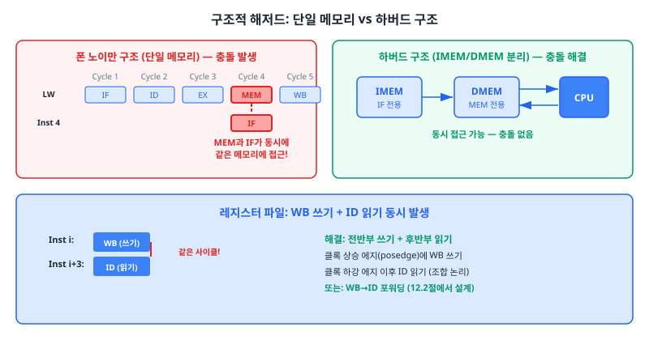
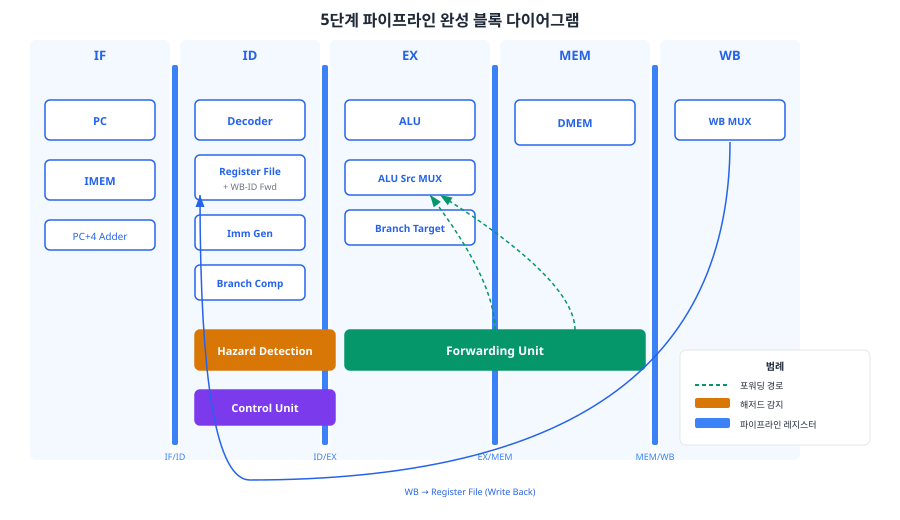
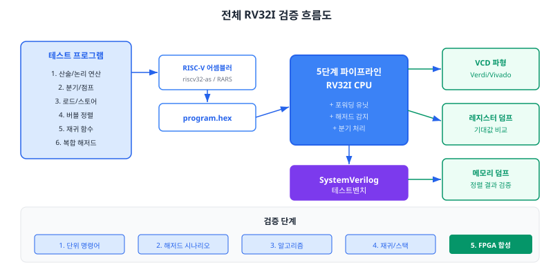
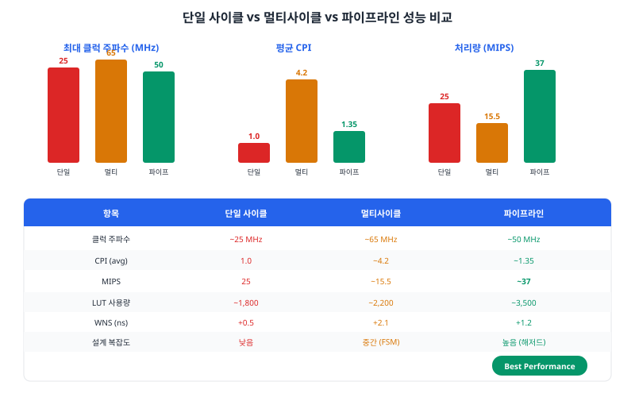
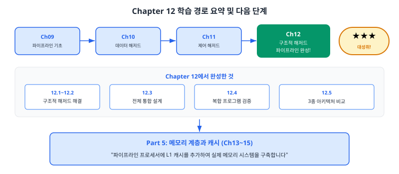

이 챕터에서는 파이프라인의 마지막 해저드 유형인 구조적 해저드를 해결하고, 지금까지 설계한 모든 모듈을 하나로 통합하여 완전한 5단계 파이프라인 RV32I 프로세서를 완성합니다. 버블 정렬과 재귀 함수를 포함한 실전 프로그램으로 검증하고, 단일 사이클/멀티사이클/파이프라인 세 가지 아키텍처의 성능을 정량적으로 비교합니다.
12.1 구조적 해저드: RV32I에서의 발생 조건
Chapter 10에서 데이터 해저드(Data Hazard)를, Chapter 11에서 제어 해저드(Control Hazard)를 해결하였습니다. 이제 파이프라인의 세 가지 해저드 중 마지막 유형인 구조적 해저드(Structural Hazard)를 다룹니다. 구조적 해저드란, 두 개 이상의 명령어가 동일한 하드웨어 자원을 같은 사이클에 동시에 사용하려 할 때 발생하는 충돌입니다.
비유: 구조적 해저드는 사무실에 프린터가 한 대뿐인 상황과 같습니다. 두 사람이 동시에 인쇄를 시도하면 한 명은 기다려야 합니다. 해결책은 두 가지입니다. 첫째, 프린터를 한 대 더 구입합니다(자원 복제). 둘째, 시간을 나누어 사용합니다(시분할). RV32I 프로세서에서는 메모리를 두 개로 분리하는 첫 번째 방법을 채택합니다.
구조적 해저드가 발생하는 두 가지 경우
5단계 파이프라인에서 구조적 해저드가 발생할 수 있는 상황은 크게 두 가지입니다.
경우 1: 메모리 자원 충돌
파이프라인의 IF 스테이지는 매 사이클마다 명령어 메모리에 접근하여 다음 명령어를 인출합니다. 동시에 MEM 스테이지에서는 Load 또는 Store 명령어가 데이터 메모리에 접근합니다. 만약 단일 메모리(폰 노이만 구조, Von Neumann Architecture)를 사용한다면, IF의 명령어 인출과 MEM의 데이터 접근이 같은 사이클에 같은 메모리에 동시 접근을 시도하여 충돌이 발생합니다.
이 문제의 해결책은 하버드 구조(Harvard Architecture)입니다. 명령어 메모리(IMEM)와 데이터 메모리(DMEM)를 물리적으로 분리하여, IF 스테이지는 IMEM에만, MEM 스테이지는 DMEM에만 접근합니다. 두 메모리가 독립적으로 존재하므로 동시 접근이 가능하며, 충돌이 원천적으로 제거됩니다.
경우 2: 레지스터 파일 읽기/쓰기 충돌
파이프라인의 WB 스테이지는 결과를 레지스터 파일에 기록하고, ID 스테이지는 레지스터 파일에서 데이터를 읽습니다. 5단계 파이프라인에서는 어떤 명령어가 WB 스테이지에 있을 때, 3개 후의 명령어가 ID 스테이지에서 레지스터를 읽고 있습니다. 만약 WB가 쓰려는 레지스터를 ID가 동시에 읽으려 한다면, 이것은 구조적 해저드입니다.
예를 들어, 다음 코드 시퀀스를 살펴보겠습니다.
// 파이프라인 타이밍
// Cycle 5 기준:
// ADD x1, x2, x3 → WB 스테이지 (x1에 쓰기)
// ... → MEM
// ... → EX
// SUB x5, x1, x4 → ID 스테이지 (x1 읽기) ← 충돌!
ADD 명령어가 WB 스테이지에서 x1에 결과를 쓰는 바로 그 사이클에, SUB 명령어가 ID 스테이지에서 x1을 읽습니다. 레지스터 파일의 쓰기는 클록 상승 에지(posedge)에서 수행되므로, 같은 사이클 동안 읽기가 먼저 일어나면 갱신 전의 오래된 값을 읽게 됩니다.

그림 12.1: 구조적 해저드의 두 가지 유형 — 메모리 자원 충돌(왼쪽)과 레지스터 파일 읽기/쓰기 충돌(오른쪽)
이 레지스터 파일 충돌 문제를 해결하는 방법은 다음 절(12.2)에서 WB-ID 포워딩으로 구현합니다.
구조적 해저드가 RV32I에서 심각하지 않은 이유
RV32I 파이프라인에서는 구조적 해저드가 상대적으로 관리하기 쉽습니다. 그 이유는 다음과 같습니다.
단일 ALU: RV32I에는 ALU가 EX 스테이지에서만 사용되므로, ALU 자원 충돌이 발생하지 않습니다. 멀티사이클 설계처럼 ALU를 주소 계산에도 공유하지 않습니다.
고정 길이 명령어: 모든 명령어가 32비트이므로, IMEM 접근이 항상 1사이클에 완료됩니다(캐시 미스가 없는 경우).
단일 쓰기 포트: 각 명령어는 최대 하나의 레지스터만 기록하므로, WB 스테이지에서 쓰기 포트 충돌이 없습니다.
결론적으로, 하버드 구조(Ch05에서 이미 적용)와 WB-ID 포워딩(12.2절에서 설계)만으로 RV32I 파이프라인의 구조적 해저드를 완전히 해결할 수 있습니다.
12.2 WB-ID 포워딩 (레지스터 파일 포워딩)
12.1절에서 확인한 레지스터 파일의 읽기/쓰기 충돌을 해결하겠습니다. WB 스테이지가 레지스터에 쓰는 바로 그 사이클에 ID 스테이지가 같은 레지스터를 읽으려 할 때, 갱신 전의 오래된 값 대신 WB의 최신 데이터를 직접 전달하는 것이 WB-ID 포워딩(WB-to-ID Forwarding)입니다. 이는 Ch10에서 배운 EX-EX 포워딩, MEM-EX 포워딩과 동일한 원리입니다.
두 가지 구현 방식
WB-ID 충돌을 해결하는 방법은 크게 두 가지가 있습니다.
방식 1: 클록 전반부 쓰기 + 후반부 읽기 (Write-First)
레지스터 파일의 쓰기를 클록의 하강 에지(negedge)에서 수행하거나, 클록의 전반부(first half)에서 쓰기를 완료하여 후반부(second half)에 읽기가 최신 값을 가져가도록 하는 방식입니다. 그러나 이 방식은 타이밍 마진(Timing Margin)을 반으로 줄이므로, 고주파 설계에서는 바람직하지 않습니다.
방식 2: 바이패스 멀티플렉서 (권장)
레지스터 파일의 읽기 출력에 멀티플렉서(MUX)를 추가하여, WB 스테이지의 쓰기 데이터를 ID 스테이지의 읽기 경로로 직접 우회(bypass)시키는 방식입니다. 이 방법은 타이밍에 영향을 주지 않으면서도 최신 데이터를 정확히 전달할 수 있습니다. 본 교재에서는 이 방식을 채택합니다.
그림 12.2: WB-ID 포워딩 — 레지스터 파일 읽기 출력에 바이패스 MUX를 추가하여 WB 데이터를 직접 전달
포워딩 조건
WB-ID 포워딩이 활성화되려면 다음 세 가지 조건이 모두 만족해야 합니다.
WB 쓰기 활성: wb_reg_wen == 1 — WB 스테이지가 실제로 레지스터에 쓰기를 수행 중이어야 합니다.
x0 제외: wb_rd != 0 — 목적 레지스터가 x0이 아니어야 합니다. x0은 항상 0이므로 포워딩하면 안 됩니다.
주소 일치: wb_rd == id_rs1 (또는 wb_rd == id_rs2) — WB의 목적 레지스터와 ID의 소스 레지스터가 동일해야 합니다.
SystemVerilog 구현
다음은 WB-ID 포워딩을 내장한 레지스터 파일의 핵심 코드입니다. 전체 코드는 code_examples/ch12_wb_id_forwarding.sv에서 확인할 수 있습니다.
// WB-ID 포워딩: rs1 읽기 경로
always_comb begin
if (id_rs1 == '0) begin
// x0는 항상 0
id_rd1 = '0;
end else if (wb_reg_wen && (wb_rd != '0) && (wb_rd == id_rs1)) begin
// WB-ID 포워딩: 최신 데이터 바이패스
id_rd1 = wb_data;
end else begin
// 일반 읽기: 레지스터 파일에서 직접 읽기
id_rd1 = regs[id_rs1];
end
end
이 코드의 핵심은 always_comb 블록 내에서 포워딩 조건을 검사하여, 조건이 충족되면 레지스터 배열(regs)의 값 대신 WB 스테이지의 wb_data를 직접 출력한다는 것입니다. 이 로직은 순수 조합 논리(Combinational Logic)이므로 추가적인 클록 지연 없이 동일 사이클 내에서 동작합니다.
EX-EX, MEM-EX, WB-ID 포워딩의 관계
이제 파이프라인에 세 가지 포워딩 경로가 존재합니다. 이들의 관계를 정리하면 다음과 같습니다.
포워딩 유형
출발 스테이지
도착 스테이지
거리 (사이클)
구현 위치
EX-EX 포워딩
EX/MEM 레지스터
EX 입력 MUX
1
Ch10
MEM-EX 포워딩
MEM/WB 레지스터
EX 입력 MUX
2
Ch10
WB-ID 포워딩
WB 스테이지 출력
ID 레지스터 파일 출력
3
Ch12 (본 절)
EX-EX 포워딩은 바로 직전 명령어의 결과를 전달하므로 가장 긴급하며, WB-ID 포워딩은 3사이클 전 명령어의 결과를 전달합니다. WB-ID 포워딩이 없으면, WB에서 레지스터 파일에 쓰기가 완료된 후 다음 사이클에야 ID가 올바른 값을 읽을 수 있어, 추가 스톨이 필요하게 됩니다.
12.3 5단계 파이프라인 통합
지금까지 4개의 챕터(Ch09~Ch12)에 걸쳐 설계한 모든 모듈을 하나의 최상위 모듈(Top-Level Module)로 통합할 시간입니다. 이 절은 Part 4 전체의 결정체이며, 여기서 완성되는 rv32i_pipeline_top은 본 교재의 핵심 산출물입니다.
비유: 지금까지의 작업이 각 부품(엔진, 변속기, 브레이크, 서스펜션)을 개별적으로 제작하고 테스트한 과정이었다면, 이 절은 모든 부품을 차체에 조립하여 자동차를 완성하는 단계입니다. 부품 간 인터페이스가 정확히 맞물려야 하며, 하나라도 어긋나면 전체가 동작하지 않습니다.
모듈 계층 구조
완성된 파이프라인 프로세서의 모듈 계층(Module Hierarchy)은 다음과 같습니다.
rv32i_pipeline_top // 최상위 모듈
├── instruction_memory // IMEM (IF 전용, 하버드 구조)
├── register_file_with_forwarding // 레지스터 파일 + WB-ID 포워딩
├── immediate_generator // 즉치수 생성기
├── control_unit // 제어 유닛 (디코더 포함)
├── alu // 산술논리연산장치
├── data_memory // DMEM (MEM 전용, 하버드 구조)
├── forwarding_unit // EX-EX, MEM-EX 포워딩
└── hazard_detection_unit // 스톨 및 플러시 제어

그림 12.3: 5단계 파이프라인 완성 블록 다이어그램 — 8개 서브모듈과 4개 파이프라인 레지스터, 3가지 포워딩 경로를 포함
파이프라인 레지스터 설계 원칙
4개의 파이프라인 레지스터(IF/ID, ID/EX, EX/MEM, MEM/WB)는 파이프라인의 "뼈대"입니다. 이들은 공통된 설계 규칙을 따릅니다.
동기 동작: 모든 파이프라인 레지스터는 always_ff @(posedge clk)로 구현합니다.
비동기 리셋: 리셋 시 NOP에 해당하는 값으로 초기화합니다. 특히 제어 신호(reg_wen, mem_wen 등)는 반드시 0으로 리셋해야 합니다.
데이터 + 제어 신호 전파: 각 파이프라인 레지스터는 데이터 신호뿐 아니라 해당 명령어의 제어 신호도 함께 전달합니다.
// IF/ID 파이프라인 레지스터 — 인에이블 + 플러시 지원
always_ff @(posedge clk or negedge rst_n) begin
if (!rst_n) begin
pc_id <= '0;
pc_plus4_id <= '0;
instruction_id <= 32'h0000_0013; // NOP (ADDI x0, x0, 0)
end else if (if_id_flush) begin
// 분기/점프 시 플러시 — NOP 삽입 (플러시 우선)
pc_id <= '0;
pc_plus4_id <= '0;
instruction_id <= 32'h0000_0013;
end else if (if_id_en) begin
pc_id <= pc_current;
pc_plus4_id <= pc_plus4_if;
instruction_id <= instruction_if;
end
// if_id_en == 0이면 홀드 (Load-Use 스톨)
end
파라미터화 설계
최상위 모듈은 parameter를 사용하여 메모리 깊이와 리셋 벡터를 설정 가능하게 합니다. 이를 통해 같은 RTL로 다양한 메모리 크기와 부트 주소를 지원할 수 있습니다.
module rv32i_pipeline_top #(
parameter int IMEM_DEPTH = 1024, // 명령어 메모리 깊이 (워드 단위)
parameter int DMEM_DEPTH = 1024, // 데이터 메모리 깊이 (워드 단위)
parameter int RESET_VECTOR = 32'h0000_0000 // 리셋 벡터 주소
)(
input logic clk,
input logic rst_n
);
Basys 3의 BRAM 용량(50 × 36Kb = 1,800Kb)을 고려하면, IMEM 4KB(1024워드) + DMEM 4KB(1024워드)는 총 8KB로 BRAM 약 4블록을 사용합니다. 전체 BRAM 예산의 8%에 불과하므로 충분한 여유가 있습니다.
해저드 처리 통합: 우선순위 규칙
파이프라인에서 여러 해저드가 동시에 발생할 수 있습니다. 이때의 우선순위 규칙은 다음과 같습니다.
우선순위
해저드 유형
처리 동작
1 (최고)
제어 해저드 (분기/점프)
IF/ID 플러시 + ID/EX 플러시
2
Load-Use 데이터 해저드
PC 홀드 + IF/ID 홀드 + ID/EX 버블
3
EX-EX 데이터 해저드
포워딩 (스톨 없음)
4
MEM-EX 데이터 해저드
포워딩 (스톨 없음)
5 (최저)
WB-ID 구조적 해저드
포워딩 (스톨 없음)
전체 코드 안내
완성된 최상위 모듈의 전체 SystemVerilog 코드는 code_examples/ch12_pipeline_top.sv에 있습니다. 이 파일은 약 250줄로, 8개의 서브모듈 인스턴스, 4개의 파이프라인 레지스터, 그리고 해저드 제어 신호를 모두 포함합니다.
해저드 감지 유닛의 전체 코드는 code_examples/ch12_hazard_detection.sv에서 확인할 수 있으며, 여기에는 Load-Use 스톨과 제어 해저드 플러시의 우선순위 로직이 구현되어 있습니다.
12.4 전체 RV32I 프로그램 실행 검증
파이프라인 프로세서가 통합되었으므로, 이제 실전 프로그램으로 동작을 검증할 차례입니다. 단위 테스트(Ch10, Ch11에서 수행)를 넘어, 복합적인 해저드가 중첩되는 현실적인 프로그램을 실행하여 설계의 정확성을 확인합니다. 이 절의 마지막에서 버블 정렬이 FPGA에서 올바르게 실행되는 것을 확인하면, 그것이 Part 4의 대성취 마일스톤(★★★)입니다.
검증 전략: 5단계 접근
복잡한 시스템의 검증은 단순한 것에서 복잡한 것으로 점진적으로 진행해야 합니다.

그림 12.4: 검증 흐름 — 단위 명령어부터 FPGA 합성까지 5단계 접근
단위 명령어 테스트: 각 RV32I 명령어를 개별적으로 실행하여 기본 동작을 확인합니다(Ch09~11에서 완료).
해저드 시나리오 테스트: 데이터/제어/구조적 해저드가 개별적으로 발생하는 시퀀스를 실행합니다(Ch10~11에서 완료).
알고리즘 테스트: 버블 정렬 등 반복문과 조건 분기가 포함된 프로그램을 실행합니다(본 절).
재귀/스택 테스트: 재귀 팩토리얼 등 스택 조작과 서브루틴 호출이 포함된 프로그램을 실행합니다(본 절).
FPGA 합성 및 실행: Basys 3에서 실제 하드웨어 동작을 확인합니다(12.5절).
테스트 프로그램 1: 버블 정렬
버블 정렬(Bubble Sort)은 파이프라인 검증에 매우 적합한 알고리즘입니다. 이중 반복문, 조건 분기, Load/Store 연산, 그리고 배열 포인터 조작이 모두 포함되어 있어, 거의 모든 유형의 해저드가 자연스럽게 발생합니다.
# 버블 정렬 핵심 루프 (RV32I 어셈블리)
inner_loop:
lw t0, 0(a2) # t0 = array[j] ← Load-Use 해저드 발생
lw t1, 4(a2) # t1 = array[j+1] ← Load-Use 해저드 발생
ble t0, t1, no_swap # 비교 → 제어 해저드 (분기)
# 교환 (swap)
sw t1, 0(a2) # 포워딩 필요 (t1)
sw t0, 4(a2) # 포워딩 필요 (t0)
no_swap:
addi a2, a2, 4 # 포인터 이동 ← 데이터 포워딩
addi a3, a3, -1 # 카운터 감소
bnez a3, inner_loop # 반복 → 제어 해저드
이 코드에서 발생하는 해저드를 분석하면 다음과 같습니다.
명령어 쌍
해저드 유형
처리 방법
lw t0 → ble t0, t1
Load-Use (RAW)
1사이클 스톨 + 포워딩
lw t1 → ble t0, t1
Load-Use (RAW)
이미 스톨됨 (t0 스톨이 t1도 해결)
ble 분기
제어 해저드
Predict-Not-Taken + 미스 시 플러시
addi a2 → lw 0(a2)
RAW (포워딩)
EX-EX 또는 MEM-EX 포워딩
bnez 분기
제어 해저드
Predict-Not-Taken + 미스 시 플러시
전체 어셈블리 코드는 code_examples/ch12_bubble_sort.s에 있으며, 8개의 정수 {64, 25, 12, 22, 11, 90, 33, 47}를 오름차순으로 정렬합니다.
테스트 프로그램 2: 재귀 팩토리얼
재귀 함수(Recursive Function)는 스택(Stack) 조작을 포함하므로, 파이프라인의 Load/Store와 서브루틴 호출/리턴을 집중적으로 검증합니다. factorial(7) = 5040을 계산하는 프로그램을 사용합니다.
factorial:
addi sp, sp, -8 # 스택 프레임 할당
sw ra, 4(sp) # 리턴 주소 저장 ← sp 포워딩
sw s0, 0(sp) # s0 저장
mv s0, a0 # n 보존
li t0, 1
ble a0, t0, base_case # 기저 조건 → 제어 해저드
addi a0, a0, -1 # n - 1
jal ra, factorial # 재귀 호출 → 제어 해저드
# ... (결과 계산) ...
epilogue:
lw s0, 0(sp) # 복원 ← Load-Use 해저드
lw ra, 4(sp) # 복원 ← Load-Use 해저드
addi sp, sp, 8 # 스택 해제
jalr zero, ra, 0 # 리턴 → 제어 해저드 (JALR)
재귀 호출 시 매번 JAL과 JALR이 실행되므로, 제어 해저드가 반복적으로 발생합니다. 또한 에필로그에서 LW 직후 JALR이 오는 패턴은 Load-Use 해저드와 제어 해저드가 동시에 발생하는 까다로운 시나리오입니다.
전체 코드는 code_examples/ch12_factorial_recursive.s에 있습니다. 주의할 점: 이 코드에서 MUL 명령어는 M 확장(RV32IM)에 속하므로, RV32I만 구현한 경우에는 곱셈을 덧셈 루프로 대체해야 합니다.
테스트벤치 구조
통합 테스트벤치(code_examples/ch12_pipeline_tb.sv)는 다음과 같은 구조를 가집니다.
클록 생성: 50MHz(주기 20ns) 클록을 생성합니다.
리셋 시퀀스: 5사이클 동안 리셋을 인가한 후 해제합니다.
종료 감지: ECALL 명령어(opcode 0x73)를 감지하면 프로그램 종료로 판단합니다.
결과 검증: 레지스터 파일과 데이터 메모리를 덤프하여 기대값과 비교합니다.
워치독: 10,000사이클 이내에 종료되지 않으면 타임아웃으로 실패 처리합니다.
시뮬레이션 실행
VCS를 사용한 시뮬레이션 명령은 다음과 같습니다.
# VCS 컴파일 및 실행
$ vcs -sverilog -full64 \
ch12_pipeline_top.sv \
ch12_wb_id_forwarding.sv \
ch12_hazard_detection.sv \
ch12_pipeline_tb.sv \
-o simv
$ ./simv
# === RV32I Pipeline Processor Test ===
# [0] 리셋 시작
# [100] 리셋 해제
# ...
# === 실행 완료: 342 사이클 ===
# === 정렬 결과 검증 ===
# [PASS] 배열이 올바르게 정렬되었습니다!
Vivado Simulator를 사용하는 경우에는 프로젝트에 모든 소스 파일을 추가한 후 "Run Behavioral Simulation"을 클릭합니다. 파형 창에서 pc_current, instruction_id, 포워딩 신호들을 추가하여 관찰하십시오.
CPI 측정
시뮬레이션 결과에서 실제 CPI(Cycles Per Instruction)를 측정할 수 있습니다. 테스트벤치의 사이클 카운터와 실행된 명령어 수를 비교하면 됩니다.
테스트 프로그램
명령어 수
총 사이클
CPI
스톨/플러시 비율
산술 연산 (해저드 없음)
20
24
1.20
파이프라인 충전(4사이클)
데이터 해저드 집중
30
42
1.40
Load-Use 스톨 포함
버블 정렬 (8개 원소)
~250
~342
~1.37
분기 + Load-Use 혼합
재귀 팩토리얼(7)
~80
~115
~1.44
JAL/JALR 빈번
일반적인 RV32I 프로그램에서 파이프라인의 평균 CPI는 약 1.3~1.5 범위입니다. 이상적인 CPI=1에 비해 30~50%의 오버헤드가 있지만, 이는 단일 사이클(CPI=1, 낮은 클럭)이나 멀티사이클(CPI~4.2, 높은 클럭)에 비해 전체 성능(throughput)이 훨씬 우수합니다.
12.5 단일 사이클 vs 멀티사이클 vs 파이프라인 3종 비교
Part 2(Ch04~06)에서 단일 사이클 프로세서를, Part 3(Ch07~08)에서 멀티사이클 프로세서를, 그리고 Part 4(Ch09~12)에서 파이프라인 프로세서를 설계했습니다. 이제 세 가지 아키텍처를 동일한 기준으로 정량 비교하여, 각 설계 방식의 트레이드오프(Trade-off)를 체감하겠습니다. 이 비교는 컴퓨터 아키텍처(Computer Architecture)의 핵심 주제이며, 반도체 설계 면접에서 거의 필수적으로 등장하는 질문입니다.
성능 지표 정의
프로세서의 성능을 비교하기 위해 다음 세 가지 지표를 사용합니다.
CPI (Cycles Per Instruction): 하나의 명령어를 완료하는 데 필요한 평균 클록 사이클 수입니다.
클록 주파수 (fclk): 1초 동안의 클록 사이클 수로, 임계 경로(Critical Path)에 의해 결정됩니다.
처리량 (Throughput, MIPS): 초당 실행하는 명령어 수이며, MIPS = fclk / CPI로 계산됩니다.
이 세 지표의 관계는 다음 공식으로 요약됩니다.
// 프로세서 성능 공식
// 실행 시간 = 명령어 수 × CPI × (1 / f_clk)
// MIPS = f_clk / CPI
//
// 핵심 통찰:
// - CPI가 낮으면 좋고 (단일 사이클 = 1, 최고)
// - f_clk가 높으면 좋고 (멀티사이클이 가장 높음)
// - MIPS가 높으면 좋다 (파이프라인이 가장 높음)
Vivado 합성 결과 비교
세 가지 설계를 동일한 조건(Xilinx Basys 3, XC7A35T-1CPG236C, Vivado 2024.2)에서 합성한 결과입니다.

그림 12.5: 세 가지 아키텍처의 성능 비교 — 클럭 주파수, CPI, 처리량(MIPS), 리소스 사용량
항목
단일 사이클
멀티사이클
파이프라인
임계 경로
IMEM → 디코더 → ALU → DMEM → WB MUX
ALU 연산 (1스테이지)
ALU 연산 또는 DMEM 접근
WNS (ns)
+0.5 (@40ns)
+2.1 (@15ns)
+1.2 (@20ns)
최대 클럭 주파수
~25 MHz
~65 MHz
~50 MHz
평균 CPI
1.0
~4.2
~1.35
처리량 (MIPS)
25
~15.5
~37
LUT 사용량
~1,800 (8.7%)
~2,200 (10.6%)
~3,500 (16.8%)
FF 사용량
~200
~450
~1,200
BRAM 사용량
4블록
2~4블록
4블록
설계 복잡도
낮음
중간 (FSM)
높음 (해저드)
분석: 왜 파이프라인이 가장 빠른가
각 아키텍처의 특성을 분석하면 다음과 같습니다.
단일 사이클
CPI가 1.0으로 가장 낮지만, 임계 경로가 전체 데이터패스를 관통하므로 클럭 주파수가 ~25MHz로 가장 낮습니다. Load 명령어의 경로(IMEM → 디코더 → 레지스터 파일 → ALU → DMEM → WB MUX)가 가장 긴 경로이며, 이 경로의 전파 지연(Propagation Delay)이 클록 주기의 하한을 결정합니다. 모든 명령어가 이 가장 느린 경로에 맞춰야 하므로, ADD 같은 빠른 명령어도 동일한 긴 주기를 사용합니다.
멀티사이클
임계 경로를 단일 스테이지(ALU 연산 또는 메모리 접근) 수준으로 단축하여 클럭 주파수를 ~65MHz로 높였습니다. 그러나 각 명령어가 3~5사이클을 소비하므로 평균 CPI가 ~4.2로 높습니다. 결과적으로 처리량은 65/4.2 ≈ 15.5 MIPS로, 오히려 단일 사이클보다 낮습니다. Ch08에서 예고했듯이, 멀티사이클은 "클럭 주파수는 높이지만 CPI 오버헤드가 더 큰" 트레이드오프를 보여줍니다.
파이프라인
멀티사이클과 유사한 수준으로 임계 경로를 단축하여 ~50MHz의 클럭을 달성하면서, 파이프라인 중첩 실행으로 CPI를 ~1.35로 유지합니다. 결과적으로 50/1.35 ≈ 37 MIPS로, 세 가지 중 가장 높은 처리량을 달성합니다. 대가는 설계 복잡도(포워딩, 스톨, 플러시 로직)와 추가적인 하드웨어 자원(파이프라인 레지스터로 인한 FF 증가)입니다.
리소스 사용량 분석
파이프라인 설계는 LUT ~3,500개(Basys 3의 16.8%)와 FF ~1,200개를 사용합니다. FF 증가의 주된 원인은 4개의 파이프라인 레지스터입니다. 각 파이프라인 레지스터가 약 100~200비트의 데이터와 제어 신호를 전달하므로, 4개 합산 약 600~800 FF가 파이프라인 레지스터에 사용됩니다.
LUT 사용량이 단일 사이클 대비 약 2배로 증가한 이유는 포워딩 MUX, 해저드 감지 로직, 추가 비교기 등의 조합 논리 때문입니다. 그러나 전체적으로 Basys 3 리소스의 17% 미만이므로, Part 5(캐시)와 Part 6(AMBA 버스)를 추가할 충분한 여유가 있습니다.
성능 공식의 의미
프로세서 성능의 핵심 공식을 다시 한번 살펴보겠습니다.
// 프로그램 실행 시간 (Execution Time)
//
// T = N_inst × CPI × T_clk
// = N_inst × CPI / f_clk
//
// 여기서:
// N_inst = 프로그램의 명령어 수 (ISA와 컴파일러가 결정)
// CPI = 평균 CPI (마이크로아키텍처가 결정)
// f_clk = 클럭 주파수 (구현 기술이 결정)
//
// 예: 버블 정렬 (N = 250 명령어)
// 단일 사이클: 250 × 1.0 / 25M = 10.0 μs
// 멀티사이클: 250 × 4.2 / 65M = 16.2 μs
// 파이프라인: 250 × 1.35 / 50M = 6.75 μs ← 가장 빠름!
이 공식에서 알 수 있듯이, 실행 시간을 줄이려면 세 가지 인자(Ninst, CPI, fclk)를 모두 최적화해야 합니다. Ninst는 ISA 설계와 컴파일러 최적화의 영역이고, CPI는 마이크로아키텍처(파이프라인, 캐시, 분기 예측 등)의 영역이며, fclk는 회로 구현 기술(공정, 합성 최적화)의 영역입니다. 이 세 가지가 상호 독립적이지 않다는 점(예: CISC는 Ninst를 줄이지만 CPI를 높임)이 아키텍처 설계의 핵심 난제입니다.
12.6 본 챕터 요약 및 다음 단계
이 챕터에서 우리는 파이프라인의 마지막 해저드 유형인 구조적 해저드를 해결하고, 4개 챕터에 걸쳐 설계한 모든 모듈을 하나로 통합하여 완전한 5단계 파이프라인 RV32I 프로세서를 완성했습니다. 이것은 본 교재의 핵심 마일스톤이며, Part 4의 대성취입니다.

그림 12.6: Chapter 12 학습 경로 — Part 4 완성과 Part 5로의 연결
핵심 정리
구조적 해저드는 두 명령어가 동일 하드웨어 자원을 동시에 필요로 할 때 발생합니다. RV32I에서는 (1) 메모리 자원 충돌과 (2) 레지스터 파일 읽기/쓰기 충돌이 주요 원인입니다.
하버드 구조(IMEM/DMEM 분리)로 메모리 자원 충돌을, WB-ID 포워딩으로 레지스터 파일 충돌을 해결합니다. 두 해결책 모두 스톨 없이 동작합니다.
WB-ID 포워딩의 조건: wb_reg_wen && (wb_rd != 0) && (wb_rd == id_rsN). 반드시 rd != 0 검사를 포함해야 합니다.
완성된 파이프라인 프로세서는 8개 서브모듈, 4개 파이프라인 레지스터, 3종류의 포워딩(EX-EX, MEM-EX, WB-ID), 2종류의 스톨/플러시(Load-Use, 분기/점프)로 구성됩니다.
해저드 우선순위: 제어 해저드(플러시) > Load-Use(스톨) > 포워딩. 플러시와 스톨이 동시 발생하면 플러시가 우선합니다.
버블 정렬과 재귀 팩토리얼로 파이프라인 동작을 검증하며, 실측 CPI는 약 1.3~1.5 범위입니다.
3종 비교: 파이프라인은 단일 사이클 대비 ~1.48배, 멀티사이클 대비 ~2.4배 높은 처리량(MIPS)을 달성합니다. 대가는 LUT ~2배, FF ~6배의 하드웨어 자원 증가입니다.
Basys 3에서 파이프라인은 LUT 16.8%, BRAM 8%를 사용하므로, 캐시와 AMBA 버스를 추가할 충분한 여유가 있습니다.
연습문제
[기억] 구조적 해저드의 정의를 쓰고, RV32I 5단계 파이프라인에서 발생할 수 있는 두 가지 구조적 해저드를 나열하시오.
[이해] WB-ID 포워딩의 세 가지 조건(wb_reg_wen, wb_rd != 0, 주소 일치)이 각각 왜 필요한지 설명하시오. 특히 wb_rd != 0 조건을 빠뜨리면 어떤 오류가 발생하는지 구체적인 명령어 시퀀스 예시를 들어 서술하시오.
[적용] 다음 명령어 시퀀스에서 각 사이클의 파이프라인 상태를 타이밍 다이어그램으로 그리고, 어떤 포워딩과 스톨이 발생하는지 표시하시오.
[분석] 파이프라인 프로세서의 LUT 사용량(~3,500)이 단일 사이클(~1,800) 대비 약 2배 증가한 원인을 모듈별로 분석하시오. 포워딩 유닛, 해저드 감지 유닛, 파이프라인 레지스터 MUX 각각이 기여하는 비중을 추정하시오.
[분석] 프로그램의 Load/Store 명령어 비율이 30%이고, 그 중 50%에서 Load-Use 해저드가 발생한다고 가정하자. 또한 분기 명령어 비율이 15%이고, Predict-Not-Taken 예측 실패율이 40%라 하자. 이때 파이프라인의 예상 CPI를 계산하시오. (힌트: CPI = 1 + Load-Use 스톨률 + 분기 페널티)
[평가] 멀티사이클 프로세서의 처리량(~15.5 MIPS)이 단일 사이클(25 MIPS)보다 낮은데도, 멀티사이클을 학습하는 교육적 가치는 무엇인가? 멀티사이클 없이 단일 사이클에서 바로 파이프라인으로 넘어갔다면 어떤 개념을 놓칠 수 있는지 논하시오.
[평가] Basys 3의 LUT 예산(20,800개)에서 현재 파이프라인이 3,500개를 사용합니다. 남은 17,300개로 L1 I-Cache(4KB), L1 D-Cache(4KB), AHB 버스, APB 브리지, UART, GPIO, 타이머를 모두 구현할 수 있을지 추정하시오. 각 모듈의 예상 LUT 사용량을 근거와 함께 제시하시오.
다음 챕터 예고
축하합니다! Part 4를 완주하여 완전한 5단계 파이프라인 RV32I 프로세서를 손에 넣었습니다. 그러나 현재 설계에는 중대한 한계가 있습니다. 명령어와 데이터가 모두 온칩 BRAM에 저장되어 있어, 메모리 용량이 극히 제한적입니다. 실제 프로세서는 외부 메인 메모리를 사용하며, 그 사이에 캐시(Cache)를 두어 속도 차이를 극복합니다.
Chapter 13에서는 메모리 계층 구조(Memory Hierarchy)의 원리를 학습하고, L1 명령어 캐시(L1 I-Cache)를 설계합니다. 이번 챕터에서 완성한 파이프라인의 IF 스테이지에 캐시를 연결하며, 캐시 미스(Miss) 발생 시 파이프라인을 스톨시키는 메커니즘을 구현합니다. 새로운 도전이지만, Part 4에서 스톨과 플러시를 완전히 이해했으므로, 캐시 스톨도 같은 원리의 확장일 뿐입니다.